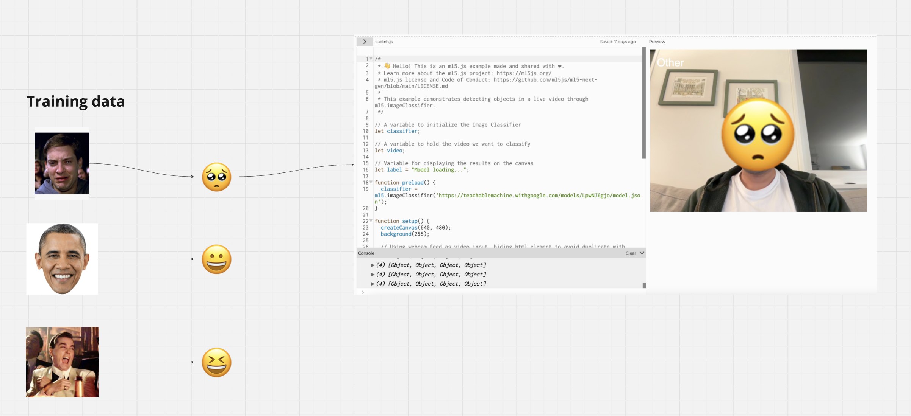

Link to P5.js Prototype

- I wanted to create a emotion detection algorithm that could convert your facial expression into an emoji.
- The use case is for WhatsApp and other communication applications to automatically detect your emotion and respond quicker
- The benefit to this is a better user experience and more engagement from your user base
- I created a function that detected the distance between your lips and if it was greater than 25 pixels, it triggered an image to load
- The image is a smiley face that is placed over your face using the faceOval parameters